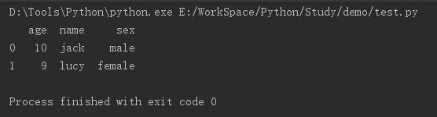
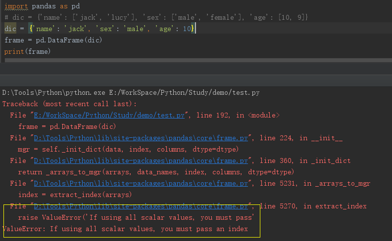
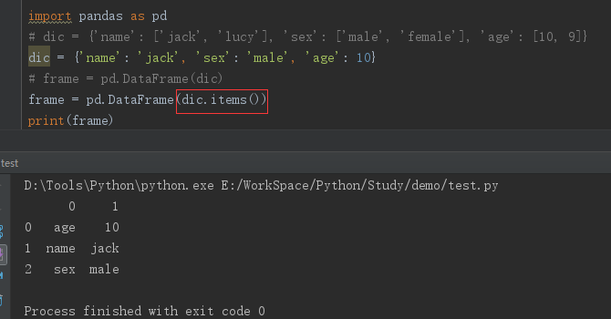
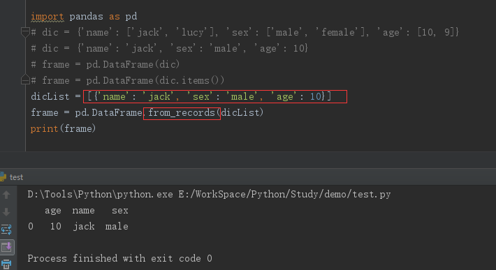
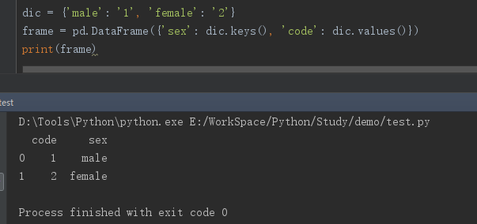

用Python优雅的做数据处理
主要包含Python、Pandas的使用、代码风格、编码技巧和问题总结
前言
本文主要是针对在实际工作中，有关数据处理方面所遇到的问题解决思路和代码优化心得的一个归纳汇总。通篇没有什么太强的逻辑和关联，基本就是想到哪就写到哪，当做一次随笔记录。将会持续不断的把自己在看到、用到的好的代码在这里做已记录和分享，相互学习，共同进步。本文主要涉及到有关Python和数据处理包Pandas的相关记录，有关基础在这里不做赘述，话不多说直入正题。
基于字典构造DataFrame
Eg：有如下字典：
1 | import pandas as pd |
对应如上的数据，要想转成DataFrame很容易：
1 | frame = pd.DataFrame(dic) |
最终结果如下所示：

但是假如字典结构变成如下形式：
1 | dic = {'name': 'jack', 'sex': 'male', 'age': 10} |
若继续用上述方式来生成DataFrame，则会报错；错误如下所示：

要规避这种错误，可以采用如下方式：

但是不难发现，这种转化结构和前者相比不太一样。倘若第二种的转化结果就是我们的期望形式，那无可厚非，可以通过指定index和column属性来完善行属性值和列属性值；但是如果我们目标结构是第一种DataFrame：字典的key作为DataFrame的列名，在这里推荐一种比较便捷的实现方式：
- Step1: 将字典转化成字典列表
dicList = [{'name': 'jack', 'sex': 'male', 'age': 10}] - 基于pd.DataFrame.from_records(dicList)来构造DataFrame

在实际的项目开发中，存在如下需求：字典的key和value均期望作为DataFrame的值，而非将key做为column；对于此类需求场景，可采用如下方式：
1 | # 性别-代号 映射 |

基于DataFrame的数据筛选
获取列中的值
Eg：DataFrame中存在一列相同的值，但该列的index未必有序，此处若想获取其中一个值，有如下两种方法：
方案一：将该列转化为list，然后获取第一个值即可value = list(frame[columns_name])[0]
方案二：value = frame[columns_name].values[0]
注：方案一在数据量过大存在性能问题，推荐使用方案二
列筛选
1 | dataframe[columns_name] # 返回值类型：Series， 仅支持单列筛选 |
行筛选
类比列筛选，行筛选也可以根据返回值类型划分为两大类：返回DataFrame类型和返回Series类型
DataFrame类型(均支持多行筛选)
- 1) 按照index的具体值筛选：
dataframe.loc[[index]]；如果指定值不存在，则会报错 - 2) 按照index的序号值筛选：
dataframe.iloc[[index]]；无需care当前index的具体值是多少(index的起始下标为0)

Series类型(均不支持多行筛选)
- 1) 按照index的具体值筛选：
dataframe.loc[index] - 2) 按照index的序号之筛选：
dataframe.iloc[index]
条件筛选
列条件筛选
Eg：有如下数据集frame

如果只想获得所有的name和age属性，可以通过loc函数很容易实现：
1 | df = frame.loc[:, ['name', 'age']] |
场景1 单一条件筛选
frame.loc[condition, :] 等价于 frame.loc[condition]
eg：找到所有年龄小与等于10 的人员信息
1 | condition = frame['age'] <= 10 |
或者
1 | # 个人习惯用这种方式，减少代码量 ^o^ |

场景2 范围筛选
eg：找到名叫Tom或者Lucy或者Jessica的人员信息
1 | df = frame.loc[frame['name'].isin(['Lucy', 'Tom', 'Jessica']), :] |

场景3 多条件筛选
frame[(condition1) & (condition2), :] 等价于 frame[(condition1) & (condition2)]
eg：找到年龄等于10且性别为女的所有人的详细信息
1 | df = frame.loc[frame['age'].isin([10]) & frame['sex'].isin(['female']), :] |

注意：多列，每个条件只能用isin做判断，不能直接用等于、大/小于进行判断
场景4 条件取反
eg：找出除Jack和Tom以为的所有人员信息
1 | df = frame.loc[~frame['name'].isin(['Jack', 'Tom']), :] |
DataFrame增添列时报SettingWithCopyWarning
当在项目代码中按df['newCol'] = value这种方式为已知的DataFrame新增列值时，有时候会报如下warning：
SettingWithCopyWarning: A value is trying to be set on a copy of a slice from a DataFrame.
对代码洁癖的人来说，这当然是无法容忍的。可以通过一种更加友好的方式来实现：
1 | DataFrame.insert（列序值， 列名， 待插入的值） |
DataFrame行添加
在已有的DataFrame中增添一行数据：df = frame.append(dic, ignore_index=True)
eg：新增一个用户信息

DataFrame排序
场景1 按照某一列排序
数值类型默认按照升序，字符串类型默认按照首字母排序
eg：按照你年龄由小到大排序
1 | # ascending=1 代表升序（默认）, =0代表降序 |
场景2 按照自定义排序
eg：将上述数据按照【Tom，Jessica， Jack， Lucy】的次序进行排序
1 | sortList = ['Tom', 'Jessica', 'Jack', 'Lucy'] |

这里新引入了一个Pandas的数据类型：Categorical
个人理解：该数据类型主要有两中应用场景（官方文档上说有三种，个人感觉第三种在实际工作中用到的并不多，也未多涉猎，故在此省略）：第一，可以数据的内存占有率，官方Doc上有个对比，同等数据量的object对象和category对象相比，后者的大小明显小于前者；这里直接截下官网Doc中的样例加以说明：

因为笔者在实际工作中对该场景的应用不是很多，所在在此未做过多涉猎，就在这简单提及一下，有兴趣的可以参考：官方Doc
在这里重点说一下第二个应用场景，即就是列表排序；可以将传统的Object类型的DataFrame列转化为category类型，即可采用：reorder_categories方法或者set_categories方法进行排序。两者之间的区别：
reorder_categories：要求指定排序列表的个数必须和待排序的DataFrame列中元素个数相等；即内容必须相同，但顺序不同；
set_categories：排序列表的个数可以不等同于DataFrame列中的元素个数；当排序列表的元素个数大于DataFrame列中的元素时，排序后去交集；反之，排序后DataF会有Nan值。
DataFrame合并
场景1 纵向合并(concat)
有如下数据集


若把这三个表纵向合并成一个表
1 | import pandas as pd |
场景2 横向合并(merge)
有如下数据集


这三个数据集都有一个共有字段：name，如果想把这三个数据集做横向合并（merge），原生的pandas是没有提供类似concat这种接口可供直接使用的；所以就得我们自己手动实现该功能：
最容易想到的办法：循环遍历数据集列表，然后做merge。

或者先通过concat，然后转置。
在这里，推荐一下比较简洁的写法：采用函数式编程中的reduce函数实现：
1 | df = reduce(lambda x, y: pd.merge(x, y, on=['name']), [df1, df2, df3]) |
基于函数式编程消除基于for循环遍历List
map函数是一种映射思想，既可以基于map函数来映射list中的每一个值，从而实现遍历的效果。
例如：对数组中每个元素的平方，map函数的返回值即就是一个list。
1 | dataList = [1, 2, 3, 4, 5] |
两个List的奇偶合并
该逻辑的实现方案有很多，在此推荐一种笔者比较钟意的方案：
1 | list1 = [1, 3, 5, 7, 9] |
注：【：：2】表示以数组中第一个位置作为起始位置，间隔跨度为2；【1：：2】表示以数组中第二个位置作为起始位置，间隔跨度为2